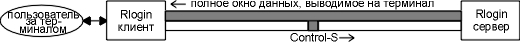
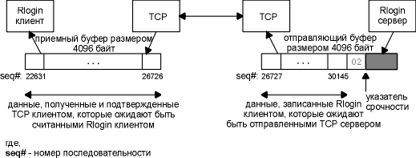
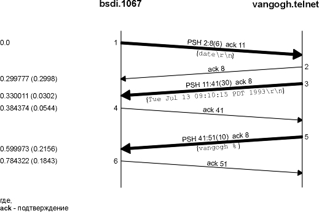
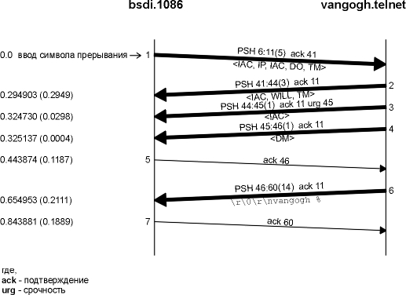

Глава 26 Telnet и Rlogin: удаленный терминал
Приложения, позволяющие осуществить заход удаленным терминалом, очень популярны в Internet. Отпадает необходимость иметь аппаратный терминал к каждому хосту, можно зайти терминалом на один хост, затем удаленным терминалом по сети на любой другой хост (в том случае, если на этом хосте существует открытый бюджет).
В сетях TCP/IP существуют два приложения, позволяющие осуществить терминальный заход.
- Telnet - стандартное приложение, которое присутствует практически в каждой реализации TCP/IP. Оно может быть использовано для связи между хостами, работающими пол управлением различных операционных систем. Telnet использует согласование опций клиента и сервера, чтобы определить, какие характеристики присутствуют с той и с другой стороны.
- Программа Rlogin происходит из Berkeley Unix и была разработана для того, чтобы работать только между Unix системами, однако впоследствии эта программа была перенесена и на другие операционные системы.
В этой главе рассматривается и Telnet, и Rlogin. Мы начнем с Rlogin, потому что это приложение работает проще.
Telnet это одно из старейших приложений Internet. Оно появилось в 1969 году в ARPANET. Имя этого приложения является сокращением от "сетевой коммуникационный протокол" (telecommmunications network protocol).
Приложения удаленного терминала используют стандарт клиент-сервер. На рисунке 26.1 показано типичное общение Telnet клиента и Telnet сервера. (Точно такой же рисунок можно нарисовать для Rlogin клиента и Rlogin сервера.)

Рисунок 26.1 Описание работы Telnet клиент-сервер.
Существует несколько моментов, на которые необходимо обратить внимание на этом рисунке.
- Клиент Telnet взаимодействует и с пользователем, находящимся за терминалом, и с протоколами TCP/IP. Обычно, все что пользователь вводит с клавиатуры отправляется по TCP соединению, а все что приходит по соединению попадает на терминал.
- Сервер Telnet обычно взаимодействует с так называемыми псевдотерминальными устройствами (pseudo-terminal), по крайней мере в Unix системах. Это делает его похожим на командный интерпритатор (shell), который запускается на сервере, или на любую программу, которая запускается из shellа, так как именно они общаются с терминальными устройствами. Некоторые приложения, например, полноэкранные редакторы, считают, что они общаются с терминальным устройством. И действительно, заставить shell на сервере считать, что он общается с терминалом, является наиболее сложным аспектом в программировании сервера удаленного терминала.
- Устанавливается только одно TCP соединение. Так как существуют моменты, когда Telnet клиент должен общаться с Telnet сервером (и наоборот), должны существовать способы, позволяющие отделить команды, которые посылаются по соединению, от пользовательских данных. Ниже мы рассмотрим, как Telnet и Rlogin справляются с этой задачей.
- На рисунке 26.1, квадратиками нарисованными пунктирными линиями, показаны терминал и псевдотерминальные драйверы, вместе с реализацией TCP/IP, которые обычно являются частью ядра операционной системы. Однако, Telnet клиент и сервер - это, как правило, пользовательские приложения.
- На хосте сервера, показан командный интерпретатор, который запускается при входе пользователя в систему (login shell). Это необходимо для получения терминального захода на сервер. Необходимо иметь открытый бюджет на этой системе, чтобы получить терминальный заход, с использованием Telnet или Rlogin.
Интересно будет сравнить сложность Telnet и Rlogin, основываясь на количестве строк в исходных текстах программ, клиента и сервера каждого приложения. На рисунке 26.2 показаны размеры стандартных Telnet и Rlogin клиентов и серверов, так, как они распространяются в различных версиях Berkeley (рисунок 1.10).

Рисунок 26.2 Сравнение размеров исходных текстов Telnet/Rlogin/клиент/сервер.
Надо отметить, что из-за появления новых опций, реализация Telnet постоянно растет, тогда как Rlogin остается простым и стабильным.
При заходе удаленным терминалом не предусматривается передача большого количества данных. Как мы уже упоминали ранее, по соединению между двумя конечными системами обычно передается очень много маленьких пакетов. В соответствии с [Paxson 1993] соотношение байт, отправленных клиентам (пользовательский ввод с терминала), к количеству байт, отправленных назад серверам, составляет примерно 1:20. Такое соотношение получается из-за того, что мы вводим короткие команды, которые, в свою очередь, могут генерировать очень большой вывод.
Rlogin появился в 4.2BSD и был предназначен для захода удаленным терминалом между Unix хостами. Поэтому Rlogin проще, чем Telnet, так как он не требует определение параметров, которые для одной и той же операционной системы известны заранее и для клиента, и для сервера. Через несколько лет Rlogin был перенесен на не-Unix системы.
RFC 1282 [Kantor 1991] содержит спецификацию протокола Rlogin. Однако, как и в случае с RFC посвященным RIP (Routing Information Protocol), он был написан после того, как Rlogin уже использовался в течении нескольких лет. Глава 15 [Stevens 1990] описывает программирование клиента и сервера удаленного терминала и предоставляет полные исходные тексты Rlogin клиента и сервера. Главы 25 и 26 [Comer and Stevens 1993] сдержат подробности разработки и исходные тексты Telnet клиента.
Запуск приложения
Rlogin использует одно TCP соединение между клиентом и сервером. После того как TCP соединение установлено, между клиентом и сервером осуществляется следующая последовательность действий.
- Клиент отправляет серверу четыре строки: (a) нулевой байт, (b) имя
пользователя на хосте клиента, заканчивающееся нулевым байтом, (с) имя
пользователя на хосте сервера, заканчивающееся нулевым байтом, (d) тип
терминала пользователя, за которым следует слэш (/), затем следует скорость
терминала, и все это заканчивается нулевым байтом. Необходимо отправить именно
два имени пользователя, потому что пользователи не обязаны иметь одинаковые
имена на разных хостах.
Тип терминала передается от клиента к серверу, потому что эта информация необходима для большинства полноэкранных приложений. Скорость терминала передается, потому что некоторые приложения работают по-разному в зависимости от скорости. Например, редактор vi работает с меньшими окнами, когда работает с меньшими скоростями, при этом он не должен постоянно перерисовывать окно.
- Сервер отвечает нулевым байтом.
- У сервера есть опция, с помощью которой он просит ввести пароль. Это осуществляется как обычный обмен данными по Rlogin соединению - специальные протоколы не применяются. Сервер отправляет клиенту строку (которую клиент отображает на терминале), чаще всего эта строка выглядит как Password:. Если клиент не вводит пароль в течение определенного времени (обычно 60 секунд), сервер закрывает соединение. В домашней директории на сервере можно создать файл (который называется .rhosts) в котором будут содержаться имя хоста и имя пользователя. Если зайти терминалом с указанного хоста с указанным именем пользователя, то не выдается приглашение ввести пароль. В некоторых публикациях, посвященных безопасности компьютерных систем, как, например, [Curry 1992], очень не рекомендуют пользоваться этой характеристикой, потому что в этом случае в секретности появляется порядочная брешь. Все что вводится в ответ на приглашение сервера ввести пароль, передается в виде открытого текста. Символы введенного пароля посылаются так, как они есть. Каждый, кто может прочитать пакеты в сети, может прочитать любой пароль. Последние реализации Rlogin клиента, например в 4.4BSD, используют Kerberos для шифрации при передаче по сети. Естественно требуются, чтобы и сервер поддерживал Kerberos. ([Curry 1992] описывает Kerberos более подробно.)
- Сервер обычно отправляет запрос клиенту, спрашивая размер окна терминала (это будет описано позже).
Клиент посылает за один раз серверу 1 байт, каждый байт сервер отражает эхо-откликом. Мы это видели в разделе "Интерактивный ввод" главы 19. Обычно используется алгоритм Нагла (глава 19, раздел "Алгоритм Нагла"), поэтому несколько входных байтов отправляются по медленным сетям как один TCP сегмент. Функционально все довольно просто: то, что вводит пользователь, отправляется на сервер, а то, что сервер отправляет клиенту, отображается на терминале.
Существуют команды, которые могут быть отправлены от клиента к серверу и от сервера к клиенту. Давайте, во-первых, опишем сценарий, по которому работают эти команды.
По умолчанию управление потоком обычно осуществляет Rlogin клиент. Клиент распознает ASCII символы STOP и START (Control-S и Control-Q), которые вводятся пользователем, и останавливает или стартует вывод на терминал.
Если это не сделано, каждый раз, когда мы вводим Control-S, чтобы остановить вывод на терминал, символ Control-S отправляется по сети к серверу, и сервер прекращает писать в сеть, однако данные (размер данных может достигать размера окна) могут быть уже выданы сервером в сеть и будут отображены на терминале, перед тем как вывод будет остановлен. Сотни или тысячи байт данных могут прокрутиться на экране, перед тем как вывод будет остановлен. На рисунке 26.3 показан подобный сценарий.

Рисунок 26.3 Функционирование Rlogin соединения в случае, если сервер поддерживает обмен STOP/START.
Для интерактивных пользователей подобная задержка отклика на ввод символа Control-S нежелательна.
Однако, иногда приложения, запущенные на сервере, должны интерпретировать каждый байт ввода, и они не хотят, чтобы клиент использовал символы Control-S и Control-Q каким-то особенным образом. (Редактор emacs является примером приложения, которое использует эти два символа как свои собственные команды.) В подобном случае сервер может сообщить клиенту, поддерживает ли он контроль потока данных или нет.
Проблема, напоминающая управление потоком данных, возникает, когда пользователь вводит символ прерывания (обычно DELETE или Control-C), чтобы прекратить процесс, запущенный на сервере. Сценарий подобен тому, который мы показали на рисунке 26.3. В этом случае также одно полное окно данных в канале между сервером и клиентом будет передано клиенту, до тех пор пока символ прерывания проделает свой путь по соединению в другом направлении. Мы хотим, чтобы символ прерывания остановил или прервал вывод данных на экран так быстро, как это возможно.
Достаточно редко поток данных от клиента к серверу может быть остановлен контролем потока данных. В этом направлении передаются только вводимые с клавитуры символы. Поэтому нет необходимости отправлять эти специальные символы (Control-S или прерывание) от клиента к серверу с использованием режима срочности TCP.
Если существует возможность поделить дисплей на окна, мы можем динамически менять размер окна, в процессе работы приложения. Некоторые приложения (обычно те, которые манипулируют с целыми окнами, такие как полноэкранные редакторы) должны знать об этих изменениях. Большинство Unix систем каким-либо образом сообщают приложению об изменении размера окна.
В случае захода удаленным терминалом, изменения размера окна происходят на компьютере клиента, и об этом необходимо сообщить приложению, которое работает на сервере. Клиенту Rlogin необходима некоторая форма уведомления, для того чтобы сообщить серверу об изменении размера окна и о том, чему теперь равен новый размер окна.
Давайте кратко рассмотрим четыре команды, которые сервер Rlogin может отправить клиенту по TCP соединению. Проблема заключается в том, что используется одно TCP соединение, поэтому сервер должен пометить байты команд так, чтобы клиент интерпретировал их именно как команды, а не отображал эти байты на терминале. Для этого используется режим срочности TCP (глава 20, раздел "Режим срочности (Urgent Mode)").
Когда сервер отправляет команду клиенту, он входит в режим срочности, при этом последний байт срочных данных это и есть байт команды от сервера. Когда клиент получает уведомление о режиме срочности, он читает из соединения и сохраняет данные до тех пор, пока не будет получен байт с командой (последний байт срочных данных). Данные, которые сохранил клиент, могут быть выданы на терминал или проигнорированы, в зависимости от команды. На рисунке 26.4 описываются четыре командных байта.
|
Байт |
Описание |
|
0х02 |
Сбросить вывод. Клиент отбрасывает все данные, принятые от сервера, до командного байта (последний байт срочных данных). Клиент также отбрасывает все данные, сбуферизированные и предназначенные для вывода на терминал. Сервер посылает эту команду, когда пользователь ввел символ прерывания. |
|
0х10 |
Клиент прекращает контролировать поток данных. |
|
0х20 |
Клиент возобновляет контроль потока данных. |
|
0х80 |
Клиент немедленно отвечает отправкой серверу текущего размера окна и уведомляет сервер, если в будущем размер окна изменится. Сервер обычно отправляет эта команду немедленно после установления соединения. |
Рисунок 26.4 Команды Rlogin, передаваемые от сервера клиенту.
Одна из причин, по которой описанные выше команды посылаются с использованием режима срочности TCP, заключается в том, что первая команда (flush output) должна быть отправлена клиенту, даже если поток данных от сервера к клиенту остановлен контролем потока данных TCP. Ситуация когда передача информации от сервера к клиенту остановлена управлением потоком данных может возникнуть, так как процессы, запущенные на сервере, обычно генерируют вывод быстрее, чем этот он может быть отображен на терминале клиента. Однако, достаточно редко может возникнуть ситуация, когда передача информациии от клиента к серверу будет остановлена управлением потоком данных, так как в этом направлении поток данных содержит только символы, вводимые пользователем.
Обратитесь к рисунку 20.14, где показано, что уведомление о срочности проходит по соединению, даже если размер окна был установлен в 0. (Мы увидим еще один пример этого в следующем разделе.) Оставшиеся три команды не критичны по времени, однако они используют ту же технику для упрощения реализации.
В настоящее время определена только одна команда, передаваемая от клиента к серверу: это отправка серверу текущего размера окна. Изменение размера окна не отправляется серверу пока клиент не получит от сервера команду 0x80 (рисунок 26.4).
И снова, так как используется одно TCP соединение, клиент должен иметь возможность пометить свои команды, чтобы они не были переданы приложению, запущенному на сервере. Клиент помечает команды с помощью отправки 2-х байт равных 0xff, за которыми следуют два специальных флаговых байта.
Для команды, управляющей размером окна, два флаговых байта это ASCII символы s. Затем следуют четыре 16-битных значения (в порядке сетевых байтов): количество символов в строке (обычно 25), количество символов в столбце (обычно 80), количество пикселей по оси X и количество пикселей по оси Y. Часто два последних 16-битных значения равны 0, так как большинство приложений, запускаемых Rlogin сервером, определяют размер экрана в символах, а не в пикселях.
Подобная форма представления команд называется командами в полосе (in-band signaling), так как командные байты передаются в обычном потоке данных. Байты, выделяющие команды из потока данных (0xff) выбраны таким образом, нажатие какой-либо клавиши не могло сгенерировать подобные байты. Естественно у подобной формы представления команд есть свои недостатки. Если мы сможем сгенерировать два последовательных байта равных 0xff с клавиатуры, за которыми будут следовать два ASCII символа s, следующие 8 введенных байт будут восприняты как размеры окна.
Команды Rlogin от сервера к клиенту, показанные на рисунке 26.4, называются командами, выходящими за полосу (out-of-band signaling), именно так эта техника называется в большинстве API. Обратитесь к режиму срочности TCP (глава 20, раздел "Режим срочности (Urgent Mode)"). Режим срочности не имеет отношения к данным, выходящим за полосу, так как командные байты передаются в обычном потоке данных, при этом их местоположение в потоке данных определяется с использованием указателя срочности.
Так как команды в полосе (in-band signaling) передаются от клиента к серверу, сервер должен просматривать каждый байт, принятый от клиента, в поисках двух последовательных байтов 0xff. В случае команд выходящих за полосу (out-of-band signaling) , которые передаются от сервера к клиенту, клиенту нет необходимости просматривать данные, которые он получает от сервера, до тех пор пока сервер не перейдет в режим срочности. Даже в режиме срочности клиенту необходимо только просмотреть байт, на который указывает указатель срочности. Так как соотношение количества байт, передаваемых в двух направлениях (от клиента к серверу и от сервера к клиенту), составляет примерно 1:20, то возникает необходимость использовать команды в полосе (in-band signaling) для небольшого потока данных (от клиента к серверу), и команды, выходящие за полосу (out-of-band signaling), для более загруженного потока данных (от сервера к клиенту).
Способы прекращения работы клиента
Обычно, все, что вводит пользователь Rlogin, отправляется на сервер. Однако иногда возникает необходимость пообщаться непосредственно с программой клиента Rlogin. При этом серверу отправлять ничего не нужно. Это делается путем ввода символа тильда (~) в первой позиции строки, за которым может следовать один из следующих четырех символов:
- Точка прекращает работу клиента.
- Символ конца файла (обычно Control-D) прекращает работу клиента.
- Символ подавления (в управлении задачами обычно Control-Z) приостанавливает работу клиента.
- Символ задержанного подавления (в управлении задачами обычно Control-Y) задерживает только ввод клиента. Все вводимое с клавиатуры интерпретируется программой, запущенной на хосте клиента, однако все отправленное Rlogin сервером клиенту появляется на терминале. Это может быть использовано, когда на сервере запущено задание, которое займет много времени, и необходимо знать, когда и что оно выдаст, однако на клиенте необходимо запустить другую программу.
Две последние команды поддерживаются, только если клиент является Unix системой, которая поддерживает управление работами.
Мы рассмотрим два примера: первый показывает протокол клиент-сервер в начале Rlogin сессии, а второй показывает, что произойдет при вводе клавиши прерывания, для того чтобы остановить процесс, работающий на сервере и генерирующий много вывода. На рисунке 19.2 показан обычный поток данных по Rlogin сессии.
Исходный протокол клиент-сервер
На рисунке 26.5 показана временная диаграмма для Rlogin соединения от хоста bsdi к серверу svr4. (Мы удалили все связанное с установлением TCP соединения, объявлением окна, а также информацию о типе сервисов.)
Протокол, описанный в предыдущих разделах, можно увидеть в сегментах 1-9. Клиент отправляет один нулевой байт (сегмент 1), за которым следуют три строки (сегмент 3). В этом примере три строки это: rstevens (имя клиента), rstevens (имя на сервере) и ibmpc3/9600 (тип терминала и скорость). Сервер проверяет полномочность этой информации и отвечает нулевым байтом (сегмент 5).
Затем сервер отправляет команду с запросом окна (сегмент 7). Эта команда отправляется с использованием режима срочности TCP. Здесь мы видим реализацию (SVR4), которая использует старую, однако более распространенную интерпретацию, когда указатель срочности указывает на номер последовательности последнего байта срочных данных плюс один. Клиент отвечает 12 байтами данных: 2 байта 0xff, 2 байта s и четыре 16-битных значения.
Следующие четыре сегмента от сервера (10, 12, 14 и 16) это приветствие операционной системы. За ними следует 7-байтное приглашение от shellа: "svr4%" (сегмент 18).
Данные, которые вводит клиент, отправляются по 1 байту за один раз, как показано на рисунке 19.2. Соединение может быть закрыто с любой стороны. Если мы введем команду, которая заставит shell, запущенный на сервере, прекратить свою работу, сервер со своей стороны осуществит активное закрытие. Если мы введем escape последовательность Rlogin клиенту (обычно тильда), за которой следует точка или символ конца файла, клиент осуществит активное закрытие.
Номер порта клиента на рисунке 26.5 равен 1023, это значение находится внутри диапазона, который управляется IANA (глава 1, раздел "Номера портов"). Протокол Rlogin требует, чтобы клиент имел номер порта меньше чем 1024, эти порты называются зарезервированные порты. В Unix системах клиент не может получить зарезервированный порт, если только процесс не имеет привилегии суперпользователя. Это является частью определения полномочий между клиентом и сервером, что позволяет пользователю получить доступ к системе, не вводя пароль. [Stevens 1990] обсуждает эти зарезервированные порты и полномочия, используемые между клиентом и сервером, более подробно.

Рисунок 26.5 Временная диаграмма Rlogin соединения.
Кнопка прерывания клиента
Давайте рассмотрим еще один пример, в котором TCP использует режим срочности, когда поток данных остановлен с помощью символа прерывания. В этом примере сведены вместе несколько алгоритмов TCP, которые мы обсуждали ранее: режим срочности, предотвращение "глупого" окна, управление потоком данных с помощью окон и устойчивого таймера. Мы стартовали клиента на хосте sun. Затем зашли терминалом на bsdi, вывели на терминал большой текстовый файл, а затем остановили вывод, нажав Control-S. Когда вывод остановлен, мы нажали клавишу прерывания (DELETE), чтобы завершить работу программы:
sun % rlogin
bsdi
приветствие от операционной системы
bsdi % cat /usr/share/misc/termcap
вывод большого
файла на
терминал
большой вывод на
терминал
мы печатаем Control-S, чтобы остановить
вывод,
и ожидаем до тех пор, пока вывод не остановится
^?
вводим символ прерывания, он отображается эхом
bsdi %
затем появляется приглашение
Ниже описаны состояния клиента, сервера и соединения.
- Вывод на терминал остановлен путем ввода Control-S.
- Rlogin клиент приостановил вывод на терминал, однако выходной буфер терминала будет заполнен.
- Rlogin клиент не может читать из сети, так как приемный буфер TCP клиента полон.
- TCP клиент объявляет размер окна равный 0, чтобы остановить отправителя (TCP модуль Rlogin сервера), когда приемный буфер полон.
- TCP модуль сервера отправляет сообщение о заполнении буфера, когда его вывод остановлен сообщением от клиента о том, что размер окна равен 0.
- Сервер Rlogin остановлен, так как отправляющий буфер полон. Таким образом, сервер Rlogin не может читать данные от приложения, которое запущено на сервере (cat).
- Приложение cat останавливается, когда его выходной буфер наполняется.
- Затем мы вводим символ прерывания, чтобы остановить работу приложения cat на сервере. Это отправляется от TCP клиента к TCP серверу, потому что поток данных в этом направлении не остановлен с помощью контроля потока данных.
- Приложение cat получает символ прерывания и прекращает свою работу. При этом его выходной буфер (из которого читал сервер Rlogin) очищается, после чего "просыпается" сервер Rlogin. Сервер Rlogin входит в режим срочности и посылает клиенту команду "очистить вывод" (0x02).
На рисунке 26.6 показан поток данных от сервера к клиенту. (Номера последовательности взяты из временной диаграммы, которую мы покажем чуть ниже.)

Рисунок 26.6 Поток данных от сервера к клиенту в примере Rlogin.
Затемненная часть отправляющего буфера это неиспользуемая часть буфера размером в 4096 байт. На рисунке 26.7 приведена временная диаграмма для этого примера.
В сегментах 1-3 сервер отправляет клиенту сегменты полного размера. Подтверждение (ACK) в сегменте 4 всего лишь объявляет окно равное 1024, потому что вывод остановлен: так как клиент не может писать на терминал, он не может читать из сети. Сегмент 5 не полного размера, а ACK в сегменте 6 объявляет только оставшееся пространство в приемном буфере, размер премного буфера составляет 4096 байт. Клиент должен объявить окно размером 349 байт, потому что если он объявит окно равное 0 (как мы ожидаем, основываясь на алгоритме избежания "глупого окна", глава 22, раздел "Синдром "глупого" окна"), это приведет к тому, что правая граница окна сдвинется влево, что не должно произойти (глава 20, раздел "Изменение размера окна"). Так как сервер не может отправить буфер полного размера, когда он принимает сегмент 6, он прибегает к алгоритму предотвращения "глупого окна", не посылая ничего, при этом устанавливается устойчивый таймер (5 секунд). Когда таймер истекает, отправляется 349 байт (сегмент 7), и так как вывод клиента все еще остановлен, подтверждение в сегменте 8 объявляет окно равное 0.
В этот момент мы вводим символ прерывания, который передается в сегменте 9. Все еще объявлено окно равное 0. Когда Rlogin сервер получает символ прерывания, он передает его приложению (cat), и приложение прекращает свою работу. Так как приложение было остановлено вводом символа прерывания с терминала, его вывод сбрасывается и это передается серверу Rlogin. Это заставляет сервер посылать команду "очистить вывод" клиенту с использованием режима срочности TCP. Мы видим это в сегменте 10. Обратите внимание, что командный байт 0x02 имеет номер последовательности 30146 (указатель срочности минус один). Перед командным байтом находится 3419 байт (номера последовательности 26727:30145), они буферизированы сервером и сервер собирается их отправить.
Сегмент 10, с уведомлением срочности, содержит следующий байт данных, который передается от сервера клиенту (номер последовательности 26727). Он не содержит командный байт "очистить вывод". Сервер может послать этот единственный байт в сегменте 10 (глава 22, раздел "Пример"), так как отправитель всегда может проверить, закрыто ли окно, отправив 1 байт данных. TCP модуль клиента немедленно отвечает сегментом 11 с нулевым окном, однако прием уведомления о срочности в сегменте 10 заставляет TCP модуль клиента уведомить Rlogin клиента, что удаленный конец соединения вошел в режим срочности.

Рисунок 26.7 Пример Rlogin, когда клиент останавливает вывод и затем прерывает работу программы на сервере.
Как только Rlogin клиент получает уведомление о срочности от своего TCP, он начинает считывание данных, которые уже ожидают этого, окно открывается (сегмент 13). Данные, буферизированные сервером, отправляются (сегменты 14, 15, 17 и 18). Последний сегмент содержит последний байт срочных данных (номер последовательности 30146), который содержит командный байт, передаваемый от сервера клиенту. Когда клиент считывает этот байт, он отбрасывает все данные, которые он прочитал в сегментах 14, 15, 17 и 18, и очищает свою выходную очередь на терминал. Следующие 2 байта в сегменте 19 содержат эхо символа прерывания: "^?". Последний сегмент, который мы показали (21), содержит приглашение shellа от клиента.
Этот пример показывает, как данные могут быть буферизированы на обоих концах соединения, когда клиент вводит символ прерывания. Если сброшено будет только 3419 байт, буферизированных на сервере, при этом 4096 байт у клиента сброшено не будет, эти 4096 байт данных вместе с тем, что было буферизировано в выходной очереди терминала у клиента, появятся в выводе.
Telnet был разработан, для того чтобы работать между хостами работающими под управлениием любых операционных систем, а также с любыми терминалами. Его спецификация, приведенная в RFC 854 [Postel and Reynolds 1983a], определяет терминал, который может являться наиболее общим, и который называется виртуальным сетевым терминалом (NVT - network virtual terminal). NVT это воображаемое устройство, находящееся на обоих концах соединения, у клиента и сервера, с помощью которого устанавливается соответствие между их реальными терминалами. Таким образом, операционная система клиента должна определять соответствие между тем типом терминала, за которым работает пользователь, с NVT. В свою очередь, сервер должен устанавливать соответствие между NVT и теми типами терминалов, которые он (сервер) поддерживает.
NVT это символьное устройство с клавиатурой и принтером. Данные, введенные пользователем с клавиатуры, отправляются серверу, а данные, полученные от сервера, поступают на принтер. По умолчанию клиент отражает эхом на принтер все, что ввел пользователь, однако, ниже мы увидим что, существуют опции, которые позволяют изменить подобное поведение.
Термин NVT ASCII означает 7-битный вариант U.S. ASCII набора символов, который используется в семействе протоколов Internet. Каждый 7-битный символ отправляется как 8-битный байт со старшим битом установленным в 0.
Конец строки передается как двухсимвольная последовательность - CR (возврат каретки - carriage return), затем следует LF (пропуск строки - linefeed). Мы показываем это как \r\n. Возврат каретки передается как двухсимвольная последовательность CR, за которой следует NUL (нулевой байт). Мы показываем это как \r\0.
В следующих главах мы увидим, что FTP, SMTP, Finger и Whois используют NVT ASCII для ввода команд клиента и откликов сервера.
Telnet использует команды в полосе (in-band signaling) в обоих направлениях. Байт 0xff (255 десятичный) называется IAC, "интерпретировать как команду". Следующий байт является командным байтом. Для того чтобы послать байт данных равный 255, отправляются два последовательных байта равных 255. (В предыдущем параграфе мы сказали, что поток данных имеет формат NVT ASCII, то есть используются 7-битные значения, а это означает, что байт данных равный 255 не может быть отправлен посредством Telnet. Существует двоичная опция Telnet, описанная в RFC 856 [Postel and Reynolds 1983b], которая, позволяет передавать 8-битные данные.) На рисунке 26.8 приведены команды Telnet.
Рисунок 26.8 Команды Telnet, предваряемые IAC (255).
Так как большинство из этих команд используется достаточно редко, мы опишем их по мере того, как они будут встречаться в тексте или в примерах.
Несмотря на то, что при начале работы Telnet подразумевается, что на каждом конце находится NVT, первый обмен данными, который происходит по Telnet соединению, являет собой обсуждение опций. Обсуждение опций это симметричный процесс - каждая сторона может послать запрос другой.
Каждая сторона может послать один из четырех различных запросов для любой заданной опции.
- WILL. Отправитель хочет включить эту опцию для себя.
- DO. Отправитель хочет, чтобы получатель включил эту опцию.
- WONT. Отправитель хочет выключить эту опцию для себя.
- DONT. Отправитель хочет, чтобы получатель выключил опцию.
Так как правила Telnet позволяют стороне принять или отклонить запрос на включение опции (случаи 1 и 2), однако требуют, чтобы она всегда удовлетворяла запрос на выключение опции (случаи 3 и 4), из этих четырех возможных случаев может получиться шесть комбинаций, которые приведены на рисунке 26.9.
| Отправитель | Получатель | Описание | ||
| 1. | WILL | ® ¬ |
DO |
отправитель хочет
включить опцию получатель говорит ДА |
| 2. | WILL | ® ¬ |
DONT |
отправитель хочет
включить опцию получатель говорит НЕТ |
| 3. | DO | ® ¬ |
WILL |
отправитель хочет,
чтобы получатель включил опцию получатель говорит ДА |
| 4. | DO | ® ¬ |
WONT |
отправитель хочет,
чтобы получатель включил опцию получатель говорит НЕТ |
| 5. | WONT | ® ¬ |
DONT |
отправитель хочет
выключить опцию получатель должен сказать ДА |
| 6. | DONT | ® ¬ |
WONT |
отправитель хочет,
чтобы получатель выключил опцию получатель должен сказать ДА |
Рисунок 26.9 Шесть сценариев обсуждения опции Telnet.
Обсуждение опции занимает 3 байта: IAC байт, за которым следует байт WILL, DO, WONT или DONT, затем ID байт, указывающий на ту опцию, которую необходимо включить или выключить. В настоящее время, таким образом, может быть обсуждено 40 опций. Assigned Numbers RFC содержат значения для байт опций, а соответствующее RFC описывает сами опции. На рисунке 26.10 показаны коды опций, которые мы увидим в этой главе.
Рисунок 26.10 Коды опций Telnet, обсуждаемые в этой главе.
Обсуждение опции Telnet, как и многое другое в протоколе Telnet, процесс симметричный. Каждая сторона может начать процесс обсуждения опции. Однако заход удаленным терминалом не является симметричным процессом. Клиент решает свои задачи, а сервер свои. Мы увидим, что некоторые опции Telnet применимы только к клиенту (например, требование включить линейный режим (linemode)), а некоторые предназначены только для сервера.
Некоторые опции требуют большего количества информации, нежели просто "включить" (enable) или "выключить" (disable). Например, установка типа терминала: для того чтобы клиент мог идентифицировать тип терминала, он должен отправить ASCII строку. Чтобы обработать эти опции, применяется обсуждение подопций.
RFC 1091 [VanBokkelen 1989] определяет подопции, которые необходимо обсудить для установки типа терминала. Во-первых, одна сторона (обычно клиент) просит включить опцию, отправляя 3-байтовую последовательность
<IAC, WILL, 24>
где 24 (десятичное) это идентификатор опции типа терминала. Если получатель (сервер) говорит ДА, его ответ будет выглядеть как
<IAC, DO, 24>
Затем сервер посылает
<IAC, SB, 24, 1, IAC, SE>
спрашивая о типе терминала клиента. SB это команда, которая сообщает о начале подопций (suboption-begin). Следующий байт равный 24 указывает на то, что это подопция типа терминала. (SB всегда следует за номером опции, к которой относятся подопции.) Следующий байт равный 1 означает "отправьте ваш тип терминала". Перед командой конец подопций (suboption-end) должен опять стоять IAC, так же как и перед командой SB. Клиент отвечает командой
<IAC, SB, 24, 0, 'I', 'B', 'M', 'P', 'C', IAC, SE>
в случае, если его тип терминала ibmpc. Четвертый байт равный 0 означает "у меня следующий тип терминала". ("Официальный" список приемлемых типов терминалов находится в Assigned Numbers RFC, однако для Unix систем приемлем любой тип терминала, поддерживаемый сервером. Обычно это терминалы, поддерживаемые базами termcap или terminfo.) Типы терминалов, указываемые в подопциях Telnet, пишутся большими буквами и обычно преобразуются в маленькие буквы уже сервером.
Полудуплексный, символ за один раз, строка за один раз или линейный режим (Linemode)?
Существуют четыре режима, в которых функционирует большинство Telnet клиентов и серверов.
- Полудуплексный.
Это режим по умолчанию, который, однако, редко используется в настоящее время. NVT по умолчанию это полудуплексное устройство, которое требует исполнения команды GO AHEAD (GA) от сервера, перед тем как будет принят ввод от пользователя. Ввод пользователя отображается локальным эхом от NVT клавиатуры на NVT принтер, таким образом, от клиента к серверу посылаются только полные строки.
Таким образом, обеспечивается минимальная поддержка терминала, однако подобным образом невозможно обеспечить полнодуплексную связь с хостами, которые поддерживают полнодуплексную форму общения, что является нормой на сегодняшний день. RFC 857 [Postel and Reynolds 1983c] определяет опцию ECHO (эхо), а RFC 858 [Postel and Reynolds 1983d] определяет опцию SUPPRESS GO AHEAD (запрещение команды go ahead). Комбинация этих двух опций предоставляет поддержку для следующего режима, символ за один раз, с удаленным эхом.
- Символ за один раз.
Именно таким образом работает Rlogin. Каждый вводимый символ отправляется серверу отдельно от других. Сервер отражает эхом большинство символов, если только у приложения на сервере не отключено отражение эхом.
Проблемы, связанные с этим режимом, в основном связаны с задержками, вызванными отражением эхом по медленным сетям, и с большим объемом сетевого траффика. Однако, мы увидим, что на сегодняшний день это наиболее распространенный режим и являющийся к тому же режимом по умолчанию.
Для того чтобы сервер мог войти в этот режим, у него должна быть включена опция SUPPRESS GO AHEAD. Обсуждение этой опции осуществляется следующим образом: клиент посылает DO SUPPRESS GO AHEAD (требуя от сервера, чтобы тот включил опцию), или сервер посылает WILL SUPPRESS GO AHEAD клиенту (спрашивая о возможности включить эту опцию для самого себя). Затем сервер осуществляет WILL ECHO, спрашивая о возможности включить отражение эхом.
- Строка за один раз.
Часто это называется "kludge line mode", потому что его реализация приходит от чтения между строк в RFC 858. Этот RFC декларирует, что должны присутствовать обе опции ECHO и SUPPRESS GO AHEAD, чтобы обеспечить ввод символа за один раз с удаленным эхом. Таким образом, если какая-либо из этих опций не включена, Telnet находится в режиме строка за один раз. В следующем разделе мы увидим пример того, как происходит обсуждение этого режима, и как он может быть отключен, когда программе сервера необходимо читать каждое нажатие клавиши. (То есть когда программа должна читать каждый символ, введенный пользователем, а не целую строку символов.)
- Линейный режим (linemode).
В данном случае этот термин означает реальную опцию linemode, определенную в RFC 1184 [Borman 1990]. Эта опция обсуждается клиентом и сервером и корректирует все недостатки в режиме строка за один раз. Новые реализации поддерживают эту опцию.
На рисунке 26.11 показаны режимы функционирования по умолчанию между различными Telnet клиентами и серверами. Выражение "char" означает символ за один раз, "kludge" означает строка за один раз и "linemode" означает реальный линейный режим RFC 1184.
|
Клиент
|
Сервер | |||||
|
Solaris 2.2 |
SVR4 |
BSD/386 |
4.4BSD | |||
| SunOS 4.1.3 |
char |
char |
char |
char |
kludge |
kludge |
| Solaris 2.2 |
char |
char |
char |
char |
kludge |
kludge |
| SVR4 |
char |
char |
char |
char |
kludge |
kludge |
| AIX 3.2.2 |
char |
char |
char |
char |
kludge |
kludge |
| BSD/386 |
char |
char |
char |
char |
linemode |
linemode |
| 4.4BSD |
char |
char |
char |
char |
linemode |
linemode |
Рисунок 26.11 Режимы функционирования по умолчанию между различными Telnet клиентами и серверами.
Только две реализации на этом рисунке поддерживают реальный линейный режим. Это BSD/386 и 4.4BSD. Только эти два сервера делают попытку обсудить режим передачи строки за раз, если клиент не поддерживает реальный линейный режим. Все клиенты и серверы, показанные на этом рисунке, поддерживают режим передачи строки за раз, однако они не выбирают этот режим по умолчанию, если только этот режим не предлагается сервером.
Telnet использует команду Data Mark в качестве сигнала синхронизации (DM на рисунке 26.8), который передается в виде срочных данных TCP. Команда DM это метка синхронизации в потоке данных, которая сообщает принимающему о необходимости вернуться в обычный режим работы. Он может быть отправлен в любом направлении по Telnet соединению.
Когда один конец принимает уведомление о том, что другой конец вошел в режим срочности, он начинает читать из потока данных, отбрасывая все данные кроме Telnet команд. Последний байт срочных данных это DM байт. Причина, по которой используется режим срочности TCP, заключается в том, что он позволяет посылать Telnet команды по соединению, даже если поток TCP данных остановлен управлением потока данных TCP.
Мы увидим примеры использования сигнала синхронизации Telnet в следующем разделе.
Управление клиентом
Как и в случае Rlogin клиента, Telnet клиент так же позволяет пообщаться с ним, вместо того чтобы отправлять пользовательский ввод серверу. Стандартный символ, позволяющий осуществить переход в режим управления клиентом (escape), это Control-] (control и правая квадратная скобка, что обычно печатается как "^]"). При этом клиент выводит приглашение, обычно выглядящее как "telnet>". В ответ на это приглашение можно вводить команды, что позволяет сменить характеристики сессии или напечатать какую-либо информацию. Команда help поддерживается большинством Unix клиентов и отображает все доступные команды.
Мы увидим примеры того, как можно управлять клиентом, а также как стоит пользоваться командами в следующем разделе.
Сейчас мы рассмотрим обсуждение опций Telnet, вместе с тремя различными режимами функционирования: символ за один раз, реальный линейный режим и режим передачи строки за один раз. Также мы увидим, что происходит, когда пользователь прекращает работу процесса на сервере с использованием символа прерывания.
Мы начнем с основного режима символ за один раз (character-at-a-time), который напоминает Rlogin. Каждый символ, который мы вводим на терминале, отправляется на сервер без каких-либо модификаций, а сервер отражает этот символ эхом. Однако если мы запустим более новую версию клиента (BSD/386), который старается включить некоторые новые опции, то увидим, что сервер, работающий под управлением SVR4, не позволит включить эти опции.
Для того чтобы увидеть, как происходит обсуждение между клиентом и сервером, мы включим опцию клиента, которая позволяет отобразить все обсуждаемые опции, а также запустим tcpdump, чтобы получить временную диаграмму обмена пакетами. На рисунке 26.12 показана диалоговая сессия.
bsdi % telnet
стартуем клиента без опций в командной строке
telnet> toggle
options
сообщаем клиенту о необходимости отобразить
Will show option processing.
всю обработку
опций
telnet> open svr4
сейчас устанавливаем соединение с сервером
Trying
140.252.13.34...
Connected to svr4.
Escape character is '^]'.
SENT
DO SUPPRESS GO AHEAD
1. (номера строк, которые мы обсудим ниже)
SENT WILL TERMINAL TYPE
2.
SENT WILL NAWS
3.
SENT WILL TSPEED
4.
SENT WILL LFLOW
5.
SENT WILL LINEMODE
6.
SENT WILL ENVIRON
7.
SENT DO STATUS
8.
RCVD DO TERMINAL TYPE
9.
RCVD WILL SUPPRESS GO AHEAD
10.
RCVD DONT NAWS
11.
RCVD DONT TSPEED
12.
RCVD DONT LFLOW
13.
RCVD DONT LINEMODE
14.
RCVD DONT ENVIRON
15.
RCVD WONT STATUS
16.
RCVD IAC SB TERMINAL-TYPE
SEND 17.
SENT IAC SB
TERMINAL-TYPE IS "IBMPC3" 18.
RCVD WILL ECHO
19.
SENT DO ECHO
20.
RCVD DO ECHO
21.
SENT WONT ECHO
22.
UNIX(r) System V Release 4.0 (svr4)
RCVD DONT ECHO
23.
login: rstevens
вводим имя
Password:
и пароль, который сервер не отображает эхом,
после чего появляется приветствие от
операционной системы...
и затем приглашение от shell
Рисунок 26.12 Начальное обсуждение опций Telnet клиентом и сервером.
Строки, в которых происходит обсуждение опций, пронумерованы (они начинаются с SENT или RCVD). Давайте рассмотрим обсуждение опций более подробно.
- Клиент начинает с обсуждения опции SUPPRESS GO AHEAD. Эта опция начинается с DO, так как команда GO AHEAD обычно отправляется от сервера клиенту, и клиент хочет, чтобы сервер включил опцию. (Это немного непонятно, так как включение опции исключает отправку команд GA.) Сервер соглашается на включение этой опции в строке 10.
- Клиент хочет отправить свой тип терминала как указано в RFC 1091 [VanBokkelen 1989]. Это является обычным для Unix клиентов. Опция начинается с WILL, так как клиент хочет включить эту опцию для себя.
- NAWS означает "обсуждение размера окна", как определено в RFC 1073 [Waitzman 1988]. Если сервер согласен (чего не происходит в строке 11), клиент посылает подопцию с количеством строк и колонок своего терминала. Если размер окна изменяется, клиент пошлет эту подопцию позже. (То же самое мы видели в случае Rlogin с командой 0x80 на рисунке 26.4.)
- Опция TSPEED позволяет отправителю (обычно клиенту) сообщить свою скорость терминала, как определено в RFC 1079 [Hedrick 1988b]. Если сервер согласен (чего не происходит в строке 12), то клиент отправляет подопцию, в которой сообщает свою скорость передачи и скорость приема.
- LFLOW обозначает "локальное управление потоком данных", как определено в RFC 1372 [Hedrick and Borman 1992]. Клиент отправляет эту опцию серверу, сообщая, хочет ли он включить или выключить управление потоком данных. Если сервер согласен (чего не происходит в строке 13), сервер посылает подопцию клиенту, в которой сообщается, что переключение между клиентом и сервером будет осуществляться с помощью Control-S и Control-Q. (Это напоминает то, что мы видели в случае Rlogin команд 0x10 и 0x20 на рисунке 26.4.) Как мы уже говорили, обсуждая Rlogin, пользователь получает лучшее управление потоком данных, когда оно осуществляется клиентом, а не сервером.
- LINEMODE это реальный линейный режим, о котором мы уже упоминали в разделе "Протокол Telnet". Вся обработка символов введенных с терминала осуществляется Telnet клиентом (удалить символ, удалить строку и так далее), а серверу отправляются завешенные строки. Ниже мы увидим, как это делается. Эта опция отклонена в строке 14.
- Опция ENVIRON позволяет клиенту отправить переменные окружения серверу, как определено в RFC 1408 [Borman 1993a]. При этом переменные окружения с хоста клиента могут быть автоматически установлены на хосте сервера. Сервер отказался активизировать эту опцию в строке 15. ( В соответствии с соглашением, переменные окружения в Unix - это имена из заглавных букв, после которых через знак равно, следует значение переменной, однако это всего лишь соглашение.) По умолчанию, Telnet клиент BSD/386 посылает только две переменные, а именно DISPLAY и PRINTER, если они определены и если опция включена. Пользователь Telnet может указать дополнительные переменные окружения, которые необходимо отправить.
- Опция STATUS (RFC 859 [Postel and Reynolds 1983e]) позволяет одному участнику обмена спросить другой о его текущем состоянии опций Telnet. В этом примере клиент просит сервер включить опцию (DO). Если сервер согласен (чего не происходит в строке 16), клиент может в подопции попросить сервер послать статус его опций.
- Это первый отклик от сервера. Сервер согласен включить опцию типа терминала. (Почти каждый Unix сервер поддерживает эту опцию.) Клиент, однако, не может послать свой тип терминала, пока сервер не попросит его об этом с помощью подопции (строка 17).
- Сервер согласен запретить отправку команды GO AHEAD.
- Сервер не позволяет клиенту отправить свой размер окна.
- Сервер не позволяет клиенту отправить свою скорость терминала.
- Сервер не позволяет клиенту осуществлять управление потоком данных.
- Сервер не позволяет клиенту включить опцию линейного режима.
- Сервер не позволяет клиенту послать переменные окружения.
- Сервер не будет посылать информацию о состоянии своих опций.
- Это подопция, с помощью которой сервер просит клиента послать тип терминала.
- Клиент посылает свой тип терминала в виде 6-символьной строки IBMPC3.
- Сервер просит клиента позволить ему осуществлять отражение эхом. Это первый момент, когда сервер инициирует обсуждение опции.
- Клиент позволяет серверу осуществлять отражение эхом.
- Сервер просит клиента осуществлять отображение эхом. Эта команда может показаться лишней, так как подобное обсуждение было предпринято в двух предыдущих строках. Это всего лишь еще один способ, применяемый в большинстве Unix систем, с помощью которого Telnet сервер определяют, является ли их клиент хостом 4.2BSD или более поздним релизом BSD. Если клиент ответит WILL ECHO, он, возможно, является хостом с более поздним релизом чем 4.2BSD и не сможет корректно поддерживать режим срочности TCP. (В этом случае режим срочности не используется.)
- Клиент отвечает WONT ECHO, из чего следует, что это хост не 4.2BSD.
- Сервер отвечает на принятое WONT ECHO с DONT ECHO.
На рисунке 26.13 показана временная диаграмма для этого обмена клиент-сервер. (Мы удалили все, связанное с установлением соединения.)
В сегменте 1 содержатся строки 1-8 (рисунок 26.12). Каждая опция занимает 3 байта в сегменте, состоящем из 24 байт. Обсуждение опций начинает клиент. Мы видим, что в одном TCP сегменте может находиться несколько Telnet опций.
Сегмент 3 соответствует строке 9 на рисунке 26.12, команда DO TERMINAL TYPE. Сегмент 5 содержит восемь откликов от сервера на предложенные опции, строки 10-17 (рисунок 26.12). Длина этого сегмента составляет 27 байт, потому что строки 10-16 это стандартные опции, каждая требует 3 байта вместе с подопцией (строка 17), которая требует 6 байт. 12 байт в сегменте 6 соответствуют строке 18, клиент посылает подопцию со своим типом терминала.
Сегмент 8 (53 байта) - это комбинация двух команд Telnet с 47 байтами данных, которые выводятся на терминал. Первые 6 байт - это две команды от сервера: WILL ECHO и DO ECHO (строки 19 и 21). Следующие 47 байт выглядят так:
\r\n\r\nUNIX(r) System V Release 4.0 (svr4) \r\n\r\0\r\n\r\0
Первые 4 байта генерируют две пустые строки, перед тем как эта строка появится в выводе. 2-байтовая последовательность \r\n - это символ новой строки в Telnet. 2-байтовая последовательность \r\0 соответствует символу возврата каретки. Этот сегмент показывает, что данные и команды могут находиться в одном и том же сегменте. Telnet клиент и Telnet сервер должны просматривать каждый полученный байт в поисках IAC байта и затем обрабатывать то, что следует за этим байтом.

Рисунок 26.13 Начальное обсуждение опций Telnet клиентом и сервером.
В сегменте 9 содержатся две последние опции от клиента: строки 20 и 22. Отклик в сегменте 10 соответствует строке 23 - это последняя опция от сервера.
С этого момента по соединению начинается обмен данными. Ничего не мешает тому, чтобы продолжить обсуждение опций, однако этого не происходит. Сегмент 12 содержит приглашение login: от сервера. Сегмент 14 это первый символ, который мы вводим в качестве нашего имени, его эхо возвращается в сегменте 15. Подобный тип интерактивного траффика мы видели в разделе "Интерактивный ввод" главы 19 в случае Rlogin: клиент посылает один символ за один раз, а сервер осуществляет эхо.
Обсуждение опций на рисунке 26.12 инициировано клиентом, однако в нашей книге мы не раз использовали Telnet клиента, чтобы подсоединиться к стандартным серверам, таким как сервер времени или эхо сервер, для того чтобы продемонстрировать различные характеристики TCP. Когда мы рассматривали обмен пакетами в этих примерах, как, например, на рисунке 18.1, то никогда не видели, чтобы клиент инициировал обсуждение опций. Почему? Unix Telnet клиент никогда не начинает обсуждение опций, если указан номер порта, отличный от стандартного порта Telnet (23). Это позволяет Telnet клиенту с использованием стандартного NVT обмениваться данными с другими, не-Telnet серверами. Мы пользовались этим с daytime, echo и discard серверами и будем использовать это с FTP и SMTP серверами в следующих главах.
Чтобы увидеть опцию линейного режима Telnet в действии, мы запустим клиента на хосте bsdi и подключимся к серверу 4.4BSD на vangogh.cs.berkeley.edu. И BSD/386, и 4.4BSD поддерживают эту опцию.
Мы не будем рассматривать все пакеты или обсуждаемые опции и подопции, потому что оно подобно тому, что мы привели в предыдущем примере. Вместо этого рассмотрим особенности обсуждения этой опции.
- Сервер 4.4BSD поддерживает больше опций, доступных к обсуждению, чем BSD/386: размер окна, локальное управление потоком данных, состояние опций, прием переменных окружения и скорость терминала.
- Сервер 4.4BSD старается обсудить более новые опции, чем те, которые поддерживаются клиентом BSD/386: аутентификация (позволяет избежать отправки пользовательского пароля в виде открытого текста по соединению).
- Клиент посылает опцию WILL LINEMODE, сервер отвечает DO LINEMODE, так как он поддерживает эту опцию. Клиент отправляет серверу 16 специальных символов в качестве подопции. Это текущие значения специальных символов терминала на хосте клиента: символ прерывания, символ конца файла и так далее. Сервер отправляет подопции клиенту, которые сообщают ему, как обрабатывать все входные строки и как осуществлять все функции редактирования (удаление символа, удаление строки и так далее). Клиент отправляет серверу только завершенные строки. Сервер также сообщает клиенту, как транслировать любые символы прерывания или сигнальные символы в соответствующие символы Telnet. Например, если символ прерывания - Control-C, и мы вводим Control-C, чтобы прервать текущий процесс на сервере, клиент посылает серверу Telnet команду "прервать процесс" (<IAC, IP>).
- Интересно посмотреть, что происходит, когда мы вводим пароль. В
случае Rlogin или режима Telnet один символ за раз, когда сервер осуществляет
эхо, он не отражает эхом символы пароля. В случае линейного режима, однако,
эхо осуществляется самим клиентом. Он справляется с этой задачей с помощью
следующего обмена:
- (a)
- Сервер отправляет WILL ECHO, сообщая клиенту, что сервер будет осуществлять отражение эхом.
- (b)
- Клиент отвечает DO ECHO.
- (c)
- Сервер отправляет строку Password: клиенту, а клиент выводит эту строку на терминал.
- (d)
- Мы вводим пароль, клиент посылает его серверу при нажатии клавиши RETURN. Пароль не отражается эхом, так как клиент считает, что это сделает сервер.
- (e)
- Сервер посылает 2-байтовую последовательность CR, LF, чтобы переместить курсор, так как символ RETURN, который завершил ввод пароля, не был отображен эхом.
- (f)
- Сервер посылает WONT ECHO.
- (g)
- Клиент отвечает DONT ECHO. Клиент восстанавливает отражение эхом.
После того как мы зашли удаленным терминалом, клиент строит полные строки и отправляет их серверу. Это и есть назначение опции линейного режима. Она уменьшает количество сегментов, которыми обмениваются клиент и сервер, а также предоставляет более быстрый отклик на введенные клиентом символы, (например, эхо и редактирование). На рисунке 26.14 показан обмен пакетами, при вводе команды
vangogh % date
по Telnet соединению с использованием линейного режима. (Мы удалили всю информацию о типе сервиса и объявления окна.)

Рисунок 26.14 Отправка команды от клиента к серверу с использованием линейного режима Telnet.
Если мы сравним это с той же самой командой, вводимой в Rlogin (рисунок 19.2), то увидим, что линейный режим Telnetа использует два сегмента (один с данными и один для подтверждения, что в целом составляет 86 байт, включая IP и TCP заголовки), тогда как Rlogin использует 15 сегментов (5 с введенными данными, 5 с отраженными эхом данными, 5 с подтверждениями, всего 611 байт). Нетрудно догадаться, в чью пользу это сравнение!
Что если на сервере мы запустим приложение, которое требует использовать режим единственного символа? (Например, редактор vi.) В этом случае будет происходить следующее.
- Когда приложение стартует на сервере и изменяет режим своего псевдотерминала, Telnet сервер уведомляется о том, что требуется режим единственного символа. Сервер посылает WILL ECHO клиенту вместе с подопцией линейного режима, которая сообщает клиенту о том, что не нужно составлять полные строки, а вместо этого необходимо посылать один символ за один раз.
- Клиент отвечает DO ECHO и подтверждает подопцию линейного режима.
- Приложение запускается на сервере. Каждый символ, который мы печатаем, отправляется серверу сам по себе (естественно используется алгоритм Нагла), при этом сервер не требует отражения эхом.
- Когда приложение завершает работу и восстанавливает режим псевдотерминала, об этом уведомляется Telnet сервер. Сервер отправляет WONT ECHO клиенту вместе с подопцией линейного режима, которая сообщает клиенту о необходимости снова составлять полные строки.
- Клиент отвечает DONT ECHO и подтверждает подопцию линейного режима.
Отличие этого сценария от того, который реализуется при вводе пароля, показывает, что функция отражения эхом и символ за один раз, а также строка за один раз, это независимые характеристики. Когда мы вводим пароль, эхо должно быть отключено, при этом активизирован режим строка за один раз. Для полноэкранных приложений, таких как редакторы, эхо отключается и требуется режим символ за один раз.
На рисунке 26.15 показаны различные режимы, которые мы видели для Telnet и Rlogin.
|
Приложение |
Клиент посылает |
Эхо клиента? |
Пример | |
|
символ за раз |
строка за раз | |||
| Rlogin |
· |
нет |
||
| Telnet, символ за раз |
· |
нет |
||
| Telnet, линейный режим |
· |
да |
обычные команды | |
| Telnet, линейный режим |
· |
нет |
ввод пароля | |
| Telnet, линейный режим |
· |
нет |
редактор vi | |
Рисунок 26.15 Сравнение режимов Rlogin и Telnet в действии.
Режим строка за раз (Kludge Line Mode)
Мы видели на рисунке 26.11, что более новые сервера, которые поддерживают опцию линейного режима, входят в режим строка за раз, если клиент не поддерживает линейный режим. Мы также упомянули, что все клиенты и серверы на этом рисунке поддерживают режим строка за раз, однако это не было установкой по умолчанию и должно быть специально включено сервером или пользователем. Давайте посмотрим, как включается режим строка за раз с использованием опций Telnet.
Во-первых, мы опишем, как сервер BSD/386 обсуждает этот режим, когда клиент не поддерживает реальный линейный режим.
- Когда клиент отказывает на требование сервера включить линейный режим, сервер посылает опцию DO TIMING MARK. RFC 860 [Postel and Reynolds 1983f] определяет эту опцию Telnet. Она предназначена для того, чтобы оба участника обмена могли синхронизироваться друг с другом. Мы увидим, как это происходит, позже в этом разделе, когда будем рассматривать прерывание от пользователя. Использование этой опции заключается в том, чтобы определить, поддерживает ли клиент режим строка за раз.
- Клиент отвечает WILL TIMING MARK, что указывает на то, что он поддерживает опцию строка за раз.
- Сервер посылает опцию WONT SUPPRESS GO AHEAD вместе с опцией WONT ECHO, сообщая о том, что он хочет выключить эти две опции. Мы упоминали ранее, что режим символ за раз подразумевает, что обе опции SUPPRESS GO AHEAD и ECHO включены, таким образом, выключение этих опций стартует режим строка за раз.
- Клиент отвечает DONT SUPPRESS GO AHEAD и DONT ECHO.
- Сервер посылает приглашение login:, мы вводим имя. Ввод отправляется серверу в виде полной строки и отражается локальным эхом клиентом.
- Сервер посылает строку Password: вместе с опцией WILL ECHO. При вводе пароля отражение эхом выключается, так как Telnet клиент считает, что сервер ответит эхом. Клиент отвечает DO ECHO.
- Мы вводим пароль. Он отправляется клиентом на сервер в виде полной строки.
- Эхо снова включается, после того как сервер отправил WONT ECHO, на что клиент отвечает DONT ECHO.
С этого момента обычные команды обрабатываются так же, как и с опцией линейного режима. Клиент осуществляет все редактирование и отражение эхом, отправляя серверу полные строки.
Мы упоминали ранее, что все клиенты и сервера на рисунке 26.11, которые помечены как "char", поддерживают режим строки за раз, однако по умолчанию стартуют в режиме символ за раз. Мы можем увидеть, как происходит обсуждение, когда мы сообщаем клиенту о необходимости войти в линейный режим:
клиент это sun, сервер это svr4
svr4 %
вводим Control-], чтобы пообщаться с Telnet клиентом
(эхо выключено)
telnet> status
проверяем, находимся ли мы в режиме символ за раз
Connected to
svr4.tuc.noao.edu
Operating in character-at-a-time mode.
Escape character
is '^]'.
telnet> toggle options
просмотрим обработку опций
Will show option processing.
telnet>
mode line
переключимся в режим строки за раз
SENT dont SUPPRESS GO
AHEAD клиент отправляет эти две
опции
SENT dont ECHO
RCVD wont SUPPRESS GO
AHEAD и сервер отвечает на обе
WONT
RCVD wont ECHO
Telnet сессия помещается в режим строки за раз, при этом обе опции SUPPRESS GO AHEAD и ECHO выключены.
Если мы запустим приложение, такое как редактор vi, на сервере, то будем иметь те же проблемы, что мы имели с опцией линейного режима. Серверу необходимо сообщить клиенту о необходимости переключиться из режима строка за раз в режим символ за раз, пока работает это приложение, а затем переключиться обратно, когда оно закончит свою работу. Используется следующая техника.
- Telnet сервер знает, что он должен перейти в режим символ за раз, потому что приложение меняет режим на своем псевдотерминале, о чем уведомляется сервер. Сервер посылает WILL SUPPRESS GO AHEAD и WILL ECHO, это помещает клиента в режим символ за раз.
- Клиент отвечает DO SUPPRESS GO AHEAD и WILL ECHO.
- Приложение запускается на сервере.
- Когда приложение прекращает свою работу и изменяет режим своего псевдотерминала, Telnet сервер помещает клиента обратно в режим строка за раз. Он посылает WONT SUPPRESS GO AHEAD и WONT ECHO.
- Клиент отвечает DONT SUPPRESS GO AHEAD и DONT ECHO, указывая на то, что он вернулся в режим строка за раз.
На рисунке 26.16 показаны различные установки опций SUPPRESS GO AHEAD и ECHO для режимов символ за раз и строка за раз.
|
Режим |
SUPPRESS GO AHEAD |
ECHO |
Пример |
| символ за раз |
вкл. |
вкл. |
редактор vi в режиме строка за раз |
| строка за раз |
выкл. |
выкл. |
обычные команды |
| строка за раз |
выкл. |
вкл. |
ввод пароля |
Рисунок 26.16 Установки Telnet опций при режиме строка за раз.
Линейный режим: символ прерывания от клиента
Давайте посмотрим, что делает Telnet, когда клиент вводит символ прерывания. Мы открыли сессию между клиентом bsdi и сервером vangogh.cs.berkeley.edu. На рисунке 26.17 показана временная диаграмма того, что происходит, когда вводится символ прерывания. (Мы удалили объявления окна и тип сервиса.)
В сегменте 1 символ прерывания (обычно Control-C или DELETE) конвертируется в команду Telnet "прерывание процесса" (IP - interrupt process): <IAC, IP>. Следующие 3 байта, <IAC, DO, TM>, содержат опцию Telnet DO TIMING MARK. Эта метка отправляется клиентом и на нее должен быть получен ответ либо WILL, либо WONT. В любом случае все данные получены от сервера, перед тем как выдается отклик (за исключением команд Telnet). Это метка синхронизации от клиента к серверу и обратно. Сегмент 1 не посылается с использованием режима срочности TCP.

Рисунок 26.17 Введение символа прерывания в процессе функционирования линейного режима.
Требование к хостам Host Requirements RFC указывает, что IP команда должна быть послана с использованием сигнала синхронизации Telnet. Если это сделано, за <IAC, IP> должно следовать <IAC, DM>, с указателем срочности, указывающим на DM байт. Большинство Unix Telnet клиентов имеют опцию, которая отправляет IP команду с сигналом синхронизации, однако эта опция по умолчанию выключена (как мы здесь и видели).
Сегмент 2 это отклик сервера на опцию DO TIMING MARK. Он следует в сегментах 3 и 4 за сигналом синхронизации Telnet: <IAC, DM>. Указатель срочности в сегменте 3 указывает на DM байт, который отправляется в сегменте 4.
Если в очередь поставлено полное окно данных или оно в пути от сервера к клиенту, все эти данные будут отброшены клиентом после отправки команды прерывания процесса в сегменте 1. Даже если управление потоком данных TCP запретило серверу отправлять данные в сегментах 2, 3 и 4, указатель срочности все равно посылается. Это аналогично тому, что мы видели в случае Rlogin на рисунке 26.7.
Почему сигнал синхронизации посылается в виде двух сегментов (3 и 4)? Мы рассмотрели это в разделе "Режим срочности (Urgent Mode)" главы 20, это связано с указателем срочности TCP. Требование к хостам Host Requirements RFC говорит, что он должен указывать на последний байт срочных данных, тогда как большинство Berkeley реализаций указывают на 1 байт позади последнего байта срочных данных. (Обратитесь к рисунку 26.6, на котором указатель срочности указывает на 1 байт позади командного байта.) Сервер Telnet специально пишет первый байт сигнала синхронизации как срочные данные, зная, что указатель срочности будет (неверно) указывать на следующий байт, который он запишет (метка данных, DM), однако эта первая запись с байтом IAC посылается немедленно, вместе с указателем срочности, который следует в следующем сегменте за DM байтом.
Последний сегмент данных, сегмент 6, это следующее приглашение shellа от сервера.
В этой главе показано функционирование приложений Rlogin и Telnet. Оба предоставляют заход удаленным терминалом с хоста клиента на хост сервера, а также позволяют запускать программы на сервере.
Между этими приложениями существуют отличия. Rlogin подразумевает, что на обоих концах соединения присутствуют Unix хосты, поэтому существует только одна опция. Это простой протокол. Telnet не ограничивает, какая операционная система используется на обоих концах соединения. Telnet разработан для того, чтобы функционировать между различными операционными системами.
Чтобы поддерживать разнородное окружение, Telnet предоставляет обсуждение опций между клиентом и сервером. Это позволяет общаться клиентам и серверам, а также позволяет добавлять новые опции.
Мы рассмотрели процесс обсуждения опций Telnet и видели, что три типа передачи данных: символ за один раз, строка за раз и реальный линейный режим. Сегодня существует тенденция по направлению ко вводу строки за раз, когда это возможно, чтобы уменьшить сетевой траффик и обеспечить лучший отклик интерактивному пользователю при редактировании строк и отражения введенного эхом.
На рисунке 26.18 сравниваются различные характеристики, предоставляемые Rlogin и Telnet.
Рисунок 26.18 Краткое описание характеристик, предоставляемых Rlogin и Telnet.
Telnet и Rlogin серверы обычно устанавливают TCP опцию "оставайся в живых" (keepalive) (глава 23), если она поддерживается реализацией TCP сервера, чтобы определить момент выхода из строя хоста клиента. Оба приложения также используют режим срочности TCP, чтобы посылать команды сервера клиенту, даже если поток данных в этом направлении был остановлен управлением потока данных.
Упражнения